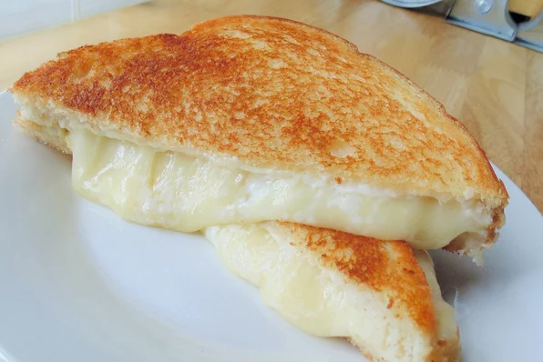

Grilled Cheese

Description:
This is the grilled cheese recipe my parents made for me as a kid.
Ingredients:
- White Bread
- Butter
- American Cheese (two slices)
- Ketchup
Steps:
- Butter one side of each of two slices of bread.
- Turn on a pan/griddle to medium low heat.
- As the pan begins heating, place one slice of bread in the pan, butter side down.
- Add two slices of cheese to the bread in the pan, and top with the second slice of bread (butter side up).
- Wait approx. 5 minutes, then flip. Wait until bread is sufficiently toasted, then remove from heat.
- Cut in half, and serve with an excessively large portion of ketchup.